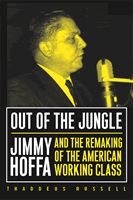

<body bgcolor="#FFFFFF" text="#000000" link="#0000FF" vlink="#CC0000" alink="#CC0000"><center><hr width="350" size="1" align="center" noshade>A provocative and controversial account of the rise of Jimmy Hoffa<hr width="350" size="1" align="center" noshade><p><a href="https://cdcshoppingcart.uchicago.edu/Cart/ChicagoBook.aspx?ISBN=9781592130276&&PRESS=temple" target="_top">Buy this book!</a> | <a href="https://cdcshoppingcart.uchicago.edu/Cart/Cart.aspx?PRESS=temple" target="_top">View Cart</a> | <a href="https://cdcshoppingcart.uchicago.edu/Cart/Cart.aspx?PRESS=temple" target="_top">Check Out</a></p><p></p></center><!--none//--><h1>Out of the Jungle</h1>
<H2>Jimmy Hoffa and the Remaking of the American Working Class</H2>
<H2><!-- [reading line on cover only] --></H2>
<h3>Thaddeus Russell</h3>
<P>paper 1-59213-027-5 $26.95, Mar 03, <FONT COLOR=#990033>Available</FONT>
<BR> 296 pp
6x9
15&nbsp;halftones
</P><BLOCKQUOTE><I>"[T]he Teamsters, the largest A.F.L. affiliate... has been understudied... Russell's motives in seeking to redress this imbalance are certainly commendable."</I>
<br>&#151<b>Maurice Isserman</b>, <I>The New York Times Book Review</I><I></I></BLOCKQUOTE>
<p>In <I>Out of the Jungle</I>, historian Thaddeus Russell gives us a detailed, crisply written, and fascinating account of Jimmy Hoffa's life and times, much of it previously untold. Russell argues that Hoffa was compelled by a variety of social forces to place the economic interests of his union members over broad ideological concerns. The most important of those forces was the demonstrated desire of ordinary Teamsters to improve their material lives. "What do you hire us for," he famously asked a meeting of truck drivers, "if not to sell your labor at the highest buck we can get?" He responded to the rank-and-file members' demands as did none of his contemporaries in the labor movement, seeking financial gain with the mercilessness that made him renowned and feared. This new paperback edition will be most cherished by students of labor history and American studies.
<BR>&nbsp;<h2>Excerpt</h2><P>Excerpt available at <a href="http://www.temple.edu/tempress">www.temple.edu/tempress</a></p>
<BR>&nbsp;<h2>Reviews</h2>
<p><I>"[A] well-researched study of the longtime Teamsters leader...[that] could put Hoffa back on the historical map for a new generation of students of labor history."</I>
<br>&#151<b><I>Publishers Weekly</I></b>
<p><I>"An unexpectedly enthralling account of Jimmy Hoffa's tactics and aspirations... Russell's history of the Teamsters under Hoffa illustrates the vibrancy of the labor movement&#151for better or worse&#151during the middle 50 years of the 20th century."</I>
<br>&#151<b><I>Kirkus Reviews</I></b>
<p><i>"In this gripping biography of Jimmy Hoffa... Thaddeus Russell launches a vigorous attack on the reigning orthodoxy in labor history."</i>
<br>&#151<b>David L. Chappell</b>, <i>Newsday</i>
<p><i>"Russell bravely challenges the received wisdom of the left, the right, and the morally earnest center. If you want to get serious about the real meaning of class in the last century, read this gracefully yet powerfully argued book."</i>
<br>&#151<b>Nelson Lichtenstein</b>
<p><i>"</i>Out of the Jungle<i> delivers a much-needed and more nuanced understanding of a tumultuous period in the history of...the nation."</i>
<br>&#151<b>John Gallagher</b>, <i>Detroit News/Free Press</i>
<p><i>"...strongly recommended reading."</i>
<br>&#151<b><i>The Midwest Book Review's Bookwatch</i></b>
<p><i>"I do believe that Russell's history of the Teamsters under Jimmy Hoffa has, strangely, become even more relevant in recent years."</i>
<br>&#151<b><i>Working USA</i></b>
<BR>&nbsp;<h2>Contents</h2><P>
<p>Acknowledgments
<br>Introduction
<br>1. American Soil
<br>2. Jungle Unionism
<br>3. The Limits of Brotherhood
<br>4. The Wages of War
<br>5. The Price of Peace
<br>6. A New Man of Power
<br>7. The Making of a "Labor Boss"
<br>8. Jungle Politics
<br>9. The Enemy Within
<br>10. Remaking the American Working Class
<br>11. Crucifixion of an Antichrist
<br>Epilogue: Resurrection
<br>Notes
<br>Index
</P><BR>&nbsp;<H2>About the Author(s)</H2>
<P><b>Thaddeus Russell</b> is visiting Assistant Professor of History at Barnard College. Born and raised in Berkeley, California, he graduated from Antioch College and received his Ph.D. in history from Columbia University. He lives with his wife in New York City.</P>
<BR><H2>Subject Categories</H2>
<p><A HREF="/tempress/labor.html" TARGET="_top">Labor Studies and Work</a>
<BR><A HREF="/tempress/biography.html" TARGET="_top">Biography/Memoir/Autobiography</a>
<BR><A HREF="/tempress/american.html" TARGET="_top">American Studies</a>
</p>
<BR><h2 class="inpageheading">In the series</H2>
<P><I><a href="http://www.temple.edu/tempress/labor_crisis.html" onMouseOver="window.status='Click for other books in this series!'; return true;" onMouseOut="window.status=''; return true;" target="_top">Labor in Crisis</a></i>, edited by Stanley Aronowitz.
</p><p>The hope for a revived progressive movement in American politics and culture depends to a large extent on the possibility of a revived labor movement. This series will stimulate debate and discussion about the state of the American labor movement and its relation to the future of America by publishing short, provocative books that offer varying analyses and prescriptions for labor's revival as well as diverse assessments of its prospects. Books in the series will be relevant to a vision of the labor movement that presupposes movements and people who care about the chances of more equality, more democratic participation in the institutions of political and social life, and more power for those traditionally excluded from economic and political decision making.</p>
<p align="center"><a href="https://cdcshoppingcart.uchicago.edu/Cart/ChicagoBook.aspx?ISBN=9781592130276&&PRESS=temple" target="_top">Buy this book!</a> | <a href="https://cdcshoppingcart.uchicago.edu/Cart/Cart.aspx?PRESS=temple" target="_top">View Cart</a> | <a href="https://cdcshoppingcart.uchicago.edu/Cart/Cart.aspx?PRESS=temple" target="_top">Check Out</a></p><p><font face="Arial" size="1"><a href="copyright.html" onMouseOver="window.status='Web Copyright Policy';return true;" onMouseOut="window.status=''" title="Web Copyright Policy">&copy;</a> 2015 <a href="http://www.temple.edu" target="new" onMouseOver="window.status='Link to Temple University home page';return true;" onMouseOut="window.status=''" title="Link to Temple University home page">Temple University</a>. All Rights Reserved. http://www.temple.edu/tempress/titles/1688_reg.html</font></p>